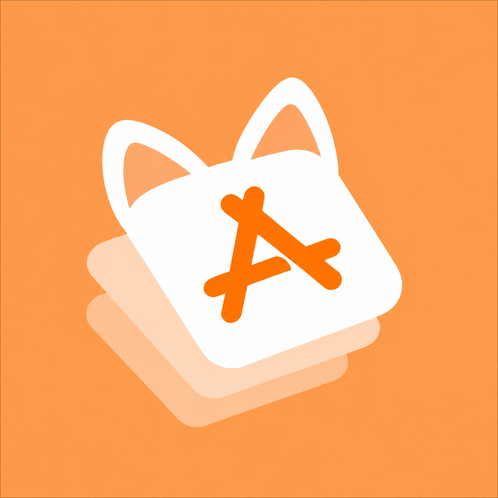

免費・非商業・開源 ฅ^•ﻌ•^ฅ
Sideloading,
the neko way.
免電腦，用 iPhone 就可以簽名自己的 IPA 來使用 :D
正在確認測試版狀態…

by Thanking157 awa
首次安裝
使用教學 :D
以下是 FrizzleM／siboot 公開的 iOS 27 免電腦 bootstrap 流程。需要 Wi‑Fi、已開啟開發者模式，以及 Open Minis 1.16 以上。
- 先裝兩個免費 App從 App Store 安裝 Open Minis 與 LocalDevVPN，接著把 LocalDevVPN 連線。
- 打開 Open Minis 終端機點右上角終端機圖示 → Shell Terminal，貼上官方 siboot 指令：
wget -qO- https://raw.githubusercontent.com/FrizzleM/siboot/main/minis/install.sh | sh - 讓 iPhone 自己配對在 siboot 頁面點 Start pairing，再到「設定 → 隱私權與安全性 → 開發者模式 → Pair with siboot」，輸入密碼與畫面上的六位數配對碼。
- 回到 Minis 完成登入輸入自己的 Apple 帳號、密碼與 2FA 驗證碼，Minis 要保持在前景直到完成。免費帳號通常只有 7 天簽署期。
- 第一次要信任憑證到「設定 → 一般 → VPN 與裝置管理」信任自己的 Apple 帳號開發憑證。
- 安裝 SideNeko v0.1保持 LocalDevVPN 連線並打開 SideInstaller，再回到本頁點最上面的橘色按鈕。確認下載來源是 GitHub 的 Thanking157／SideNeko，讓 SideInstaller 簽署並安裝，完成啦 w
官方下載
SideStore 與 LiveContainer
只放官方 GitHub Release，SideNeko 不代抓檔案，也不放來路不明的 IPA ฅ( ̳• ·̫ • ̳ฅ)
安全 & 隱私
你的秘密不是網站的資料。
本網站只提供免電腦側載教學與測試版下載，不會儲存你的 Apple ID、密碼或驗證碼，就這麼簡單 w